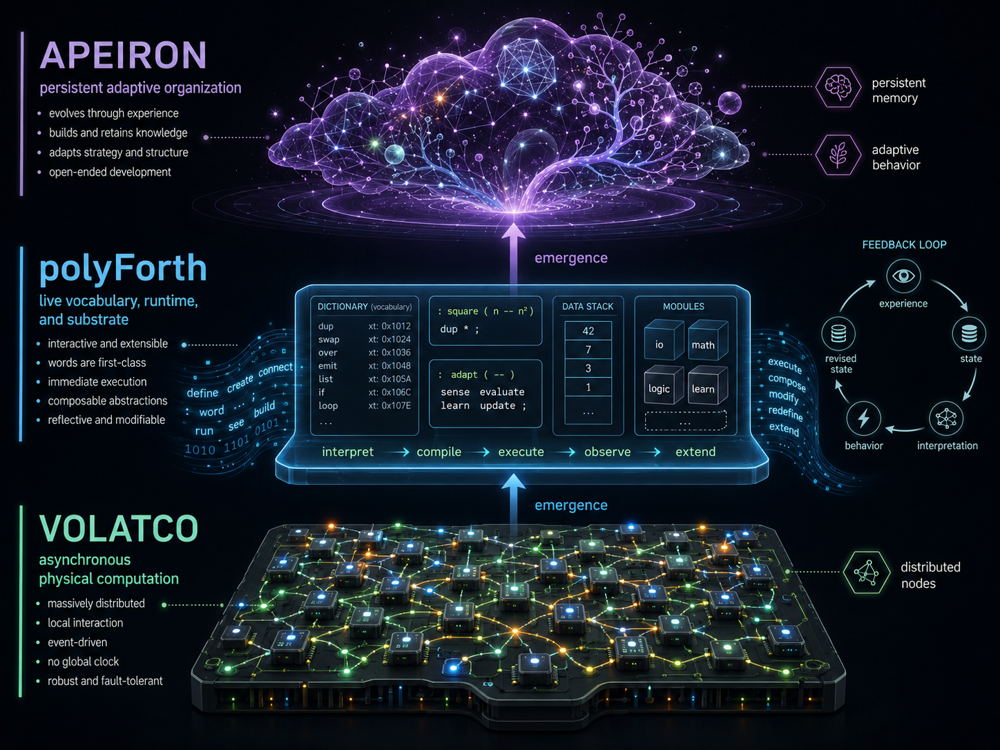

Three layers of one proposition
Volatco is the physical machine. polyForth is the machine-facing computational substrate. Apeiron is the adaptive architecture that develops upon it.

How to read the image:
- The bottom layer shows Volatco as a field of distributed asynchronous nodes.
- The middle layer shows polyForth as the live dictionary, stack, modules, and runtime where behavior is expressed and revised.
- The top layer shows Apeiron as the persistent adaptive organization that grows from continued experience.
- The side loop clarifies that behavior is not one-shot output, but part of a continuing cycle of experience, interpretation, revision, and state.
This should be read as a general architecture for companion systems, not as a Dot-only diagram. Pavie is one expression of it, but the same stack is meant to inform Henry Bear, Cartheur-Joi, Letty, and work on Aibo enhancements.
Volatco: The Physical Substrate
Volatco is a compact asynchronous multicomputer intended for robotics, edge intelligence, autonomous systems, low-energy computing, and experimental computer architectures.
Rather than behaving as one conventional processor executing a centrally scheduled instruction stream, Volatco presents a field of small, cooperating processing nodes. These nodes communicate locally and can perform different tasks at their own natural rates.
This architecture is particularly relevant to persistent and embodied systems. Perception, motor control, communication, memory maintenance, diagnostics, and higher-level behavior do not necessarily need to run continuously or at the same frequency.
Different responsibilities can occupy different processing nodes:
┌──────────────────────┐
│ Sensor interpretation│
├──────────────────────┤
│ Motor control │
├──────────────────────┤
│ Communications │
├──────────────────────┤
│ Persistent memory │
├──────────────────────┤
│ Adaptive behavior │
└──────────────────────┘The hardware therefore becomes more than a processor on which an application runs. It becomes a distributed physical substrate in which multiple activities coexist.
polyForth: The Programmable Substrate
polyForth is the interactive software environment through which the Volatco machine is defined, inspected, extended, and reorganized.
It should not be understood merely as a language used to compile applications for the board. It is better understood as a live computational substrate.
Its Forth-like properties include:
- an interactive running environment;
- incremental extension through new words;
- direct access to machine behavior;
- a unified vocabulary for drivers, tools, protocols, and applications;
- minimal separation between language, runtime, operating environment, and application;
- the ability to inspect and modify a system while it is operating.
A conventional software stack often resembles this:
Application
↓
Framework
↓
Runtime
↓
Operating system
↓
Device drivers
↓
ProcessorThe polyForth approach compresses these layers:
Problem vocabulary
↓
Behavior and coordination
↓
polyForth dictionary and runtime
↓
F18A node network
↓
Volatco hardwareThe important term is substrate. polyForth is not simply a compiler that produces a finished binary and then disappears. It remains present as the manipulable medium in which computation is expressed.
New concepts can become new executable words. Those words can then be combined into increasingly sophisticated structures.
Apeiron: The Adaptive Architecture
The name Apeiron comes from the Greek concept of the unlimited, indefinite, or boundless.
In this computing context, Apeiron describes an architecture that is not completely determined at manufacture, compilation, or initial deployment. It begins with a persistent computational foundation from which increasingly differentiated behavior can develop.
Apeiron is concerned with:
- persistent state;
- learning through interaction;
- revision through experience;
- autonomous local operation;
- the development of new behavior;
- continuity between previous and future activity;
- reduced dependence on centralized or cloud-based intelligence.
Apeiron should not be understood simply as another neural-network model. It is closer to an architecture for a continuing computational entity:
Experience
↓
Persistent state
↓
Interpretation
↓
Behavior
↓
Consequences
↓
Revised state
└──────────────→ Future interpretationThe system does not merely accept an input, calculate an output, and return to an unchanged initial condition. Its previous activity changes the conditions under which later activity occurs.
How the Three Layers Fit Together
The illustration above is useful here because it makes the stack visible all at once. Rather than reading the layers as separate product names, it helps to read them as a vertical dependency: physical distribution below, live executable organization in the middle, and adaptive continuity above.
| Layer | Role | Central Question |
|---|---|---|
| Volatco | Physical asynchronous multicomputer | Where does activity happen? |
| polyForth | Executable and extensible software substrate | How is activity expressed and reorganized? |
| Apeiron | Persistent adaptive architecture | How does experience change future behavior? |
The relationship can be represented as:
APEIRON
Persistent adaptive organization
│
▼
polyForth
Live vocabulary, runtime, and substrate
│
▼
VOLATCO
Asynchronous physical computationEach layer resolves a limitation of the layer beneath it. Volatco provides many small computational locations, but hardware alone does not create meaningful organization. polyForth makes those resources programmable, interactive, and intelligible, but programmability alone does not constitute learning. Apeiron introduces persistence, adaptation, developmental continuity, and the capacity for experience to influence future behavior.
In the image, that relationship is shown by the two emergence arrows. They are important: the upper layer is not a detached abstraction, but something that depends on the structure and activity of the layer beneath it.
Why polyForth Is Particularly Relevant
An adaptive system must acquire distinctions. In Forth, a distinction can be made concrete as a word.
For example, an initially simple system might contain:
: DISTANCE sonar@ ;
: NEAR? DISTANCE 20 < ;
: RETREAT motors-reverse ;These words can then be composed into behavior:
: AVOID-OBSTACLE
NEAR? IF RETREAT THEN ;A more developed Apeiron system could revise:
- thresholds;
- word associations;
- scheduling priorities;
- processor-node assignments;
- persistent observations;
- behavioral responses;
- communication pathways;
- vocabulary definitions.
The dictionary would then become more than a program store. It would become part of the system's operational memory and acquired structure.
Learning as Structural Revision
Most contemporary machine-learning systems define learning primarily as the adjustment of numerical parameters inside a predefined model. The polyForth-Apeiron approach allows learning to be interpreted more broadly.
Learning might include:
- creating a new word;
- modifying an existing word;
- composing several observations into a reusable procedure;
- moving a behavior to a different processing node;
- retaining a newly observed condition;
- modifying a sensor threshold;
- changing the priority of a process;
- creating a new relationship between existing words;
- consolidating repeated experience into executable structure.
For example:
: DARK? light-level@ DARK-THRESHOLD < ;
: QUIET? sound-level@ QUIET-THRESHOLD < ;
: SAFE-TIME? DARK? QUIET? AND ;The system might later form a more general behavior:
: CONSERVE-POWER
SAFE-TIME?
IF
nonessential-nodes-sleep
THEN ;In a genuinely adaptive implementation, the thresholds, relationships, and resulting behaviors would not need to remain fixed.
The Meaning of Substrate
The phrase polyForth substrate shifts attention away from applications as sealed, finished artifacts.
A substrate:
- persists beneath individual behaviors;
- supports the formation of new structures;
- provides constraints without prescribing every outcome;
- remains active while the system changes;
- allows multiple processes to coexist;
- preserves continuity across modifications.
On Volatco, the substrate has both a physical and a symbolic dimension.
Physical substrate
The asynchronous node network provides:
- computational location;
- timing;
- communication;
- physical state;
- energy consumption;
- interaction with sensors and actuators.
Symbolic substrate
The polyForth environment provides:
- words;
- dictionaries;
- stacks;
- executable relationships;
- persistent definitions;
- interactive inspection;
- behavioral composition.
Apeiron emerges when persistent adaptive organization inhabits both substrates.
This is also why the illustration matters. It does not present substrate as a flat base alone. It shows substrate as layered support: the physical board, the live symbolic medium, and the adaptive pattern that can only persist because both lower layers remain active.
Beyond an Application Running on Hardware
The combined concept rejects several conventional separations.
Software and Hardware
polyForth keeps software behavior close to physical execution. The software environment is not isolated behind many opaque abstraction layers.
Development and Operation
The live system can remain inspectable and extensible after deployment. Development does not necessarily stop when the system begins operating.
Memory and Behavior
Persistent state directly influences future activity. Memory is not merely archived data; it participates in behavior.
Language and Application
The vocabulary used to describe the problem can become the executable application itself.
Learning and Programming
Learning does not need to be restricted to training a fixed numerical model. It can include structural revision of executable definitions and relationships.
A Computational Organism
The resulting vision is not simply artificial intelligence running on Volatco. It is a persistent computational entity whose vocabulary, state, and behavior inhabit an asynchronous machine and develop through continued interaction.
That vision is intentionally portable. It can support multiple companion forms and personalities rather than a single device line, which is why this futurescape matters outside Dot alone.
Such an entity could possess:
- distributed perception;
- local reflexes;
- persistent memory;
- self-monitoring;
- adaptive scheduling;
- evolving vocabulary;
- long-duration autonomous operation;
- inspectable internal behavior;
- direct interaction with its physical environment.
The system would not be a static application with learning added as a separate component. Learning, execution, memory, and physical interaction would be aspects of one continuing process.
Summary
The three concepts form a coherent architectural stack:
Volatco
The physical asynchronous computing substrate
polyForth
The interactive and extensible executable substrate
Apeiron
The persistent adaptive organization that develops within itTogether, they describe:
A persistent computational entity whose vocabulary, state, and behavior inhabit an asynchronous machine and can develop through continued interaction.
That is the conceptual unity of polyForth, Apeiron, and Volatco. It is relevant to Pavie, but it is equally a broader design language for Henry Bear, Cartheur-Joi, Letty, and future Aibo enhancements.